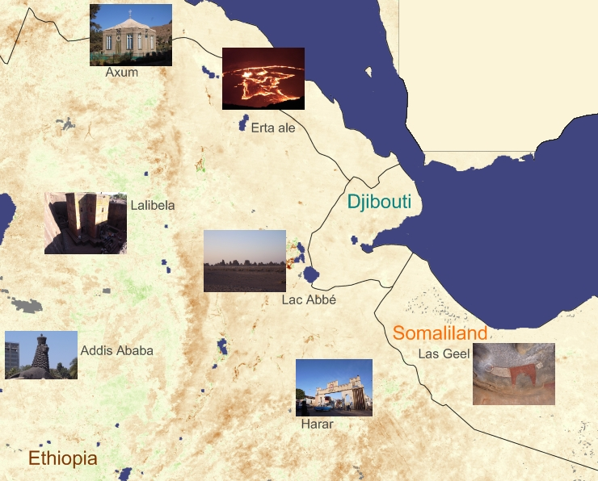

2011-2012 Horn of Africa 非洲之角
Ethiopia
2011-12-17 Addis Ababa
2011-12-18 Addis Ababa
2011-12-19 Addis Ababa
2011-12-20 Addis Ababa → Harar
Somaliland
2011-12-21 Harar → Hargeisa
2011-12-22 Hargeisa
2011-12-23 Las Geel
Djibouti
2011-12-24 Djibouti
2011-12-25 Lac Assal & Lac Abbé
2011-12-26 Lac Abbé
Ethiopia
2011-12-27 Mekele
2011-12-28 Tigray
2011-12-29 Danakil
2011-12-30 Danakil
2011-12-31 Erta Ale
2012-01-01 Danakil
2012-01-02 Axum
2012-01-03 Axum
2012-01-04 Lalibela
2012-01-05 Lalibela
2012-01-06 Lalibela → Addis Ababa
2012-01-07 Addis Ababa
